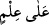
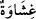

mabud yoktur.” [14]
Bazıları şöyle demiştir:
“Hevan”, kelimesinin “nûn”u “hevâ” kelimesinden çalınmıştır.
Hevâsına esir olan herkes hevan’ın aşağılık ve bayağılığın esiridir.
Diğer bazıları da şöyle demiştir:
Nefs ve hevana isyan et.
Onu memnun etme!
Şâyet nefsini ona muhalefetle kızdırırsan güzelleşirsin.
Şâyet memnun etmek istersen kendi düşmanlığını istemiş olursun.
Şeyh Sa’dî şöyle demiştir:
Kimin muradını yerine getirsen sana itâat eder,
Nefis ise böyle değildir, o dileğini aldıkça serkeşlik eder.
Mevlânâ Câmî şöyle demiştir:
“Allah’ın mahlûkâtının yolunda hiçbir ezâ ve cefâ,
Kötülüğü emreden nefsin ezâ ve cefâsı kadar kötü değildir.”
“Allah onu saptırdı” demek, “Adâletinin gereği onu yardımsız bıraktı” demektir.
Yâni “onu yoldan çıkardı ve onu terk etti”. “
” ifâdesi failden haldir. Yâni “Allah
Teâlâ onun sapıklığını ve aslî fıtratını değiştirdiğini bilmektedir” demektir. Bu
kelimenin mefûlden de hâl olması mümkündür. Yâni “bu sapık adam hidâyet yolunu
bildiği halde îmândan sapıtmıştır.” Bu ifâde Allah Teâlâ’nın: “O bildikleri kitap
kendilerine gelince onu inkâr ettiler” (el-Bakara, 2/89) ve (el-Câsiye: 45/17) “Onlar
kendilerine bilgi geldikten sonra sadece aralarındaki çekememezlik yüzünden
ayrılığa düştüler” kavl-i ilâhîleri gibidir.
“
”, “görüp idrak etmekten sonra gözü perdeleyip onu kapatan şeydir.” Kelimenin
“nekre” oluşu çeşitlilik, yahut tâzim içindir. Bazı büyükler şöyle demiştir: “Allah bu
adamın kulağına mühür vurdu. Adam Allah’ın kitabını duymaktan mahrum oldu. Allah
bu adamın kalbini mühürledi, Allah’ın hitabını anlamaktan mahrum oldu. Allah bu
adamın gözünü perdeledi, Allah Teâlâ’nın harika kudret eserlerini müşâhede etmekten
mahrum oldu ve hakkı göremedi.”
Yâni bu durumda hiç kimse bu adamı hidâyet etmeye muktedir olamaz. Öğüt almaz
mısınız? Yâni nasihate uyup aklınızı başınıza alınız. Âyete şöyle işârî bir mânâ
verilmiştir: Filozoflar dehriyye ve tabiatçılar ve ittiba yoluna girmeyenler şeriat kanunu